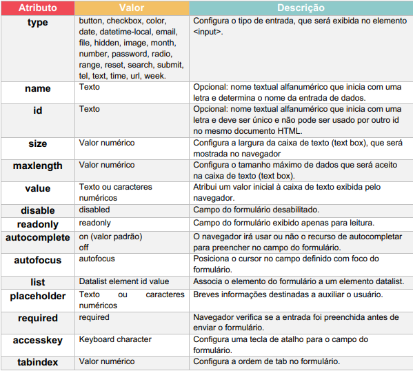
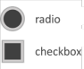

- O elemento <form> é usado para criar formulários
- Nele são inseridos dados que são enviados para o banco de dados do site
- O elemento <label> define o nome do elemento usado no formulário
- O elemento <placeholder> é uma breve descrição do que deve ser inserido pelo usuário
- O elemento <input> é onde todas as informações são inseridas e nele existem vários atributos.
Segue a tabela mostrando-os:

- São úteis para inserir dados pré selecionados impedindo o usuário de alterá-los 
- Radio é utilizado para escolher uma ou mais opções
- Já o checkbox é utilizado apenas para uma opção
- O elemento <select> é usado para criar uma lista suspensa
- Já o elemtno <datalist> cria uma lista com opções pré-definidas que apresenta sugestões
para o usuário conforme ele vai digitando - Deve inserir a tag <option> para acrescentar uma opção a lista
- Define uma caixa de texto onde pode ser inseridos muitas informações
- Acompanhado dos atributos "rows" quantidades de linhas e "cols" quantidades de colunas
- Geralmente usado para sugestões e reclamações
Exemplo de label + placeholder + input:
Tipo checkbox e radio:
Elementos selct e datalist
Tipo textarea:
Exemplo:
Insira aquei a sua reclamação e/ou sugestão: